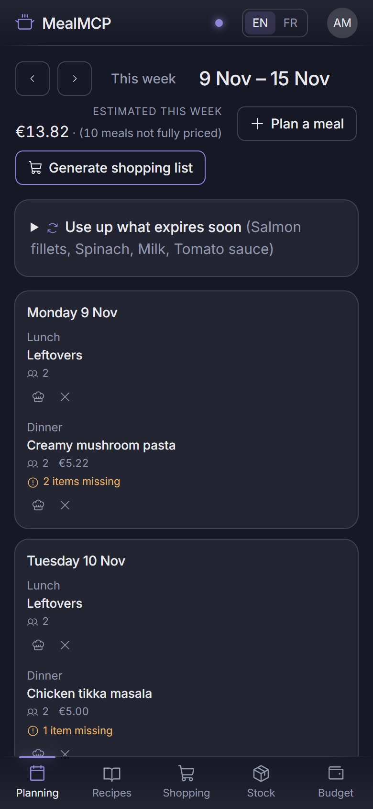
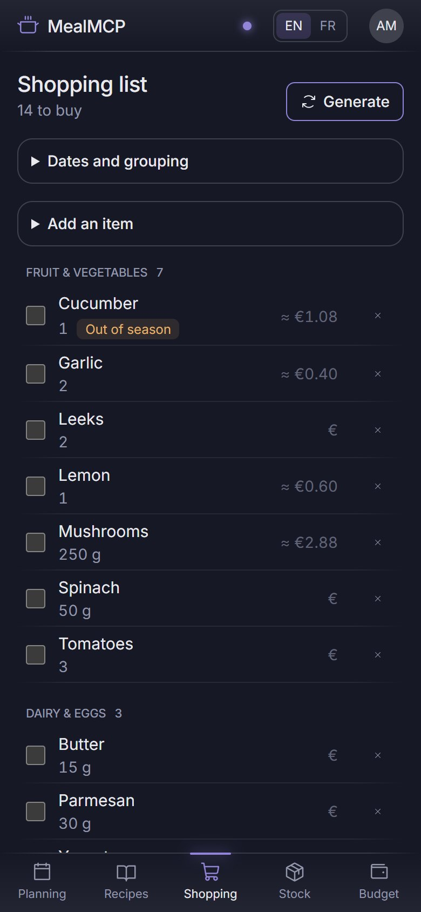
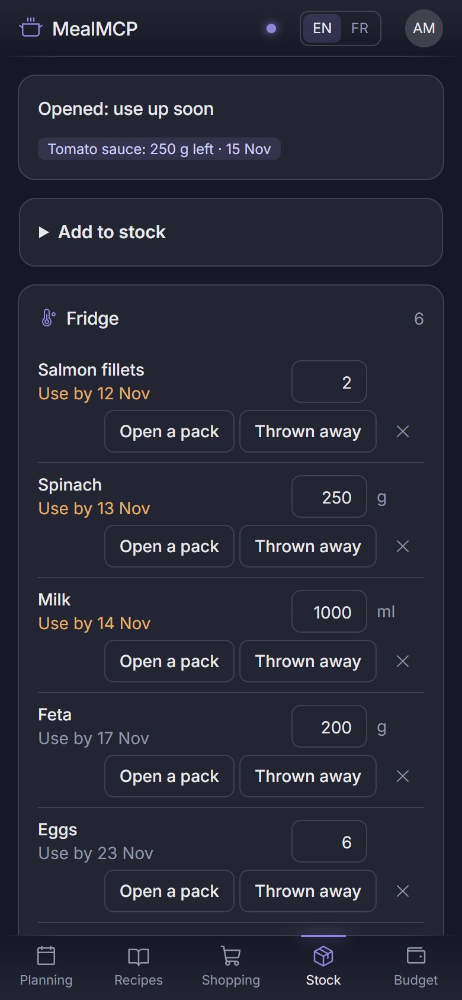
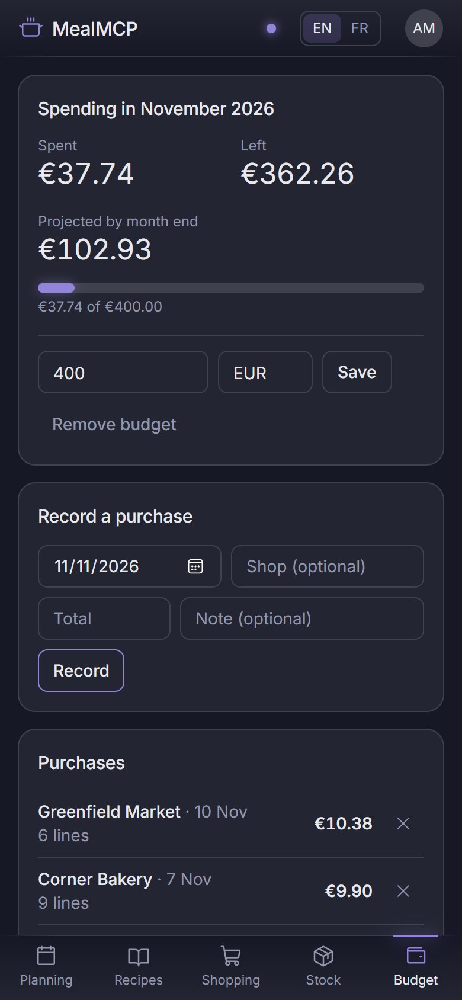

Plan the week. Let your AI do the rest.
Decide what to eat, buy only what you need, use what is already in the fridge and keep the grocery budget in check. One app you host yourself, that Claude or any AI assistant can run for you.

From “what do we eat?” to the receipt
Do it by hand, or ask your AI: everything you can do in the app, it can do too.
Plan the week in minutes
Drop a recipe or a quick note on each day. Empty slots stand out, so nothing is left to “we will see”.
Shopping lists that write themselves
One tap turns the week’s meals into a list: what you need, minus what is already at home. Sort it by aisle and tick as you walk the shop.
Know what is in the fridge
See what expires first, get an alert on opened jars, and cook what you already own before buying more.
Recipes that fit your kitchen
Rate and favorite recipes, see which ones you can make tonight, and get a warning when one needs an appliance you do not have.
Grocery budget under control
Log receipts, set a monthly budget and see where you will land before the month ends. In any currency.
Calories and macros, only if you want them
Turn on nutrition to see calories, protein, carbs and fat for every recipe. Values come from Open Food Facts or your own numbers, and the app tells you when an ingredient is missing. Off by default.
Eat in season
A fruit and vegetable calendar for your country. Out-of-season items on your list come with in-season alternatives.
Diets and allergies, handled
Vegetarian, gluten-free, the 14 EU allergens, foods someone dislikes: unsuitable recipes are flagged and never suggested.
Less waste, less repetition
Remember what you cooked so menus stay fresh, and see what throwing food away really costs you.
One household, everyone in sync
Invite the family. Changes show up on every device instantly, including the ones your AI makes.
On your phone
Install it like an app and use it one-handed in the shop. Dark theme, English and French.
Say it, your AI does it
Ask Claude what to cook tonight, to plan the week or to build the list. It sees your real stock and budget, so its answers fit your kitchen, not a generic one.
- One-step connection: paste the address, sign in, allow. You can revoke the access at any time.
- Scripts and other tools can use a personal token, the same one opens the REST API.
- Everything you can do: plan, shop, log receipts, adjust the stock, check a recipe’s cost.
- Your household only: the assistant never sees another household’s data.
What your AI can do
Stock
list_stock add_stock update_stock_item open_stock_item consume_stock remove_stock_item get_stock_alertsRecipes
list_recipes get_recipe create_recipe update_recipe check_recipe_availability suggest_recipes_to_use_upMeal plan
list_meal_plan plan_meal cook_planned_meal list_planning_slotsShopping
list_shopping_list generate_shopping_list add_shopping_item check_shopping_item complete_shoppingBudget
record_expense get_spending_summary get_budget_status set_budget estimate_recipe_cost estimate_shopping_list_costNutrition (optional)
search_nutrition set_product_nutrition get_recipe_nutrition get_meal_plan_nutritionAnd more
list_products update_product add_product_alias list_equipment set_household_settings add_stock_bulk create_recipes_bulk plan_meals_bulkA quick tour
Real screens with demo data. Click one to see it full size.


In your pocket
Open the list in the shop and tick as you go. Check what is left at home before you buy it twice.








Self-host in two minutes
One container, one file for your data. Runs on a Raspberry Pi, a NAS or a small server.
Get the files
Grab docker-compose.yml and .env.example from the repository and copy the example to .env. Set PUBLIC_URL to the real address of the app.
Start it
cp .env.example .env # then edit PUBLIC_URL
docker compose up -dCreate the first account
Open the app: the first account becomes the household owner. Invite others from the Account tab with a single-use code.
Connect your AI
Add PUBLIC_URL/mcp as an MCP server in Claude. Remote clients need HTTPS: put the app behind a reverse proxy.
Your data never leaves your server. Passwords are hashed, sessions are protected and sign-in attempts are rate-limited.
Under the hood
Express 5, TypeScript, SQLite, the official MCP SDK on the server; React 19, Vite and Tailwind 4 on the web. The web app and the AI endpoint run the same code, so they never disagree.
server/src
db/ Drizzle schema + SQLite, migrations at startup
domain/ Zod schemas, units, dates, errors
auth/ accounts, sessions, households, OAuth server
services/ all the business logic (per household)
api/ REST adapter (web UI)
mcp/ MCP adapter (AI clients)
web/src React + Vite + Tailwind UI (EN / FR)